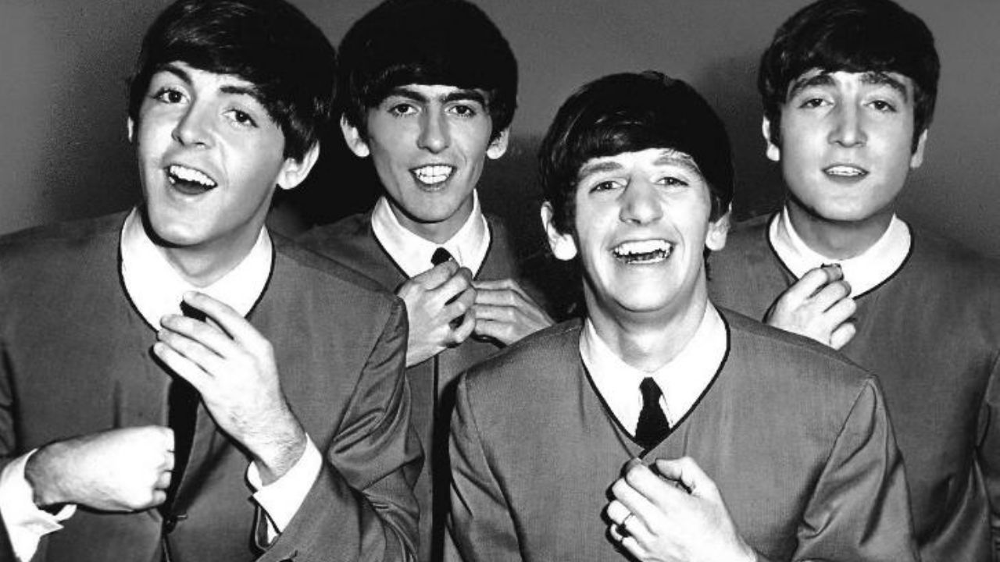
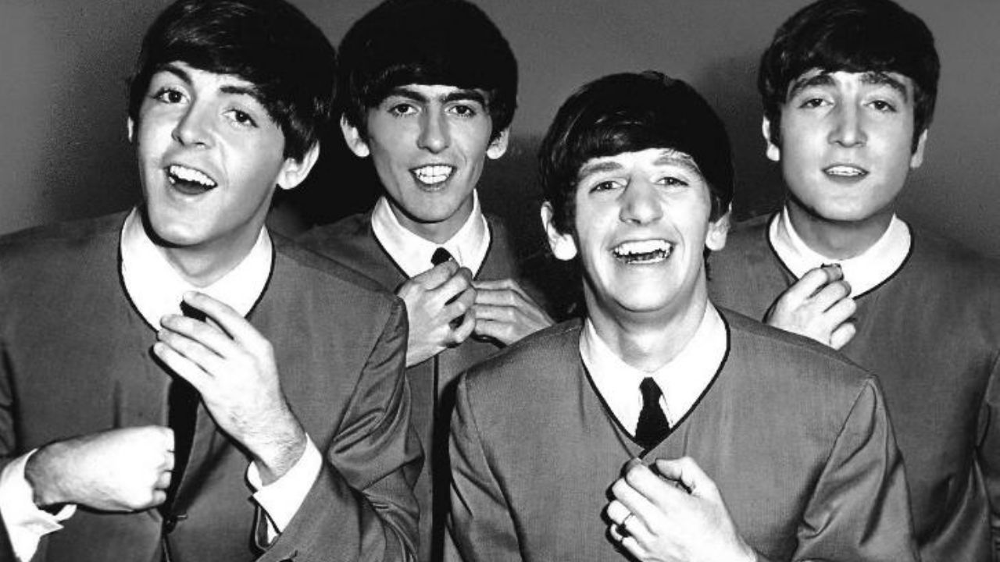

Noticias Sobre os Beatles
The Beatles é uma das maiores bandas de rock de todos os tempos. O quarteto formado por John Lennon, Paul McCartney, Ringo Starr e George Harrison começou em Liverpool, em 1960.
O primeiro sucesso do Beatles veio com "Love Me Do", single que antecederia o lendário álbum Please Please Me, de 1963. A banda tem diversos discos lançados, milhões de cópias vendidas e uma legião de fãs.
Após alguns anos tocando músicas de rock que iniciaram a beatlemania, no final da década de 1960 eles começaram a explorar outros estilos - desta nova época surgiu a obra-prima Sgt. Pepper's Lonely Hearts Club Band, considerado por muitos o melhor álbum do Beatles.
Peter Jackson planeja projeto sobre Beatles com Paul McCartney e Ringo Starr
Depois de ter a docu-série em três partes The Beatles: Get Back indicada ao Emmy, o cineasta Peter Jackson já planeja uma nova produção sobre os Garotos de Liverpool que pode contar com as participações mais que especiais dos últimos dois integrantes vivos do quarteto: Sir Paul McCartney e Ringo Starr.
A revelação foi feita em entrevista concedida ao Deadline. Jackson afirmou: "Estou conversando com os Beatles sobre outro projeto, algo muito diferente de Get Back. Estamos vendo quais são as possibilidades, mas é outro projeto com eles. Não é realmente um documentário, e isso é tudo que posso falar".
Para Get Back, o diretor dos filmes de O Senhor dos Anéis mergulhou em mais de 130 horas de arquivos de áudio e 57 horas de filmes produzidos por Michael Lindsay-Hogg para o documentário Let It Be, sobre o fim do Quarteto Fabuloso. A série documental está disponível no Disney+.
Os Beatles e a Índia | Documentário chega ao catálogo da HBO Max
A HBO Max adicionou ao seu catálogo brasileiro o documentário Os Beatles e a Índia, que explora a forma como o quarteto de Liverpool influenciou a cultura no país asiático - e vice-versa. Escrita e dirigida por Ajoy Bose, a produção mostra a banda na cidade indiana de Rishikesh e como essa imersão na cultura local levou o grupo a um novo ápice criativo. De acordo com a sinopse oficial, “Os Beatles e a Índia é uma crônica histórica e única do caso de amor duradouro entre a banda e a Índia, que começou há mais de meio século. Raras filmagens de arquivo, fotografias, relatos de testemunhas oculares e comentários de especialistas, juntamente com filmagens de locais em toda a Índia para dar vida à fascinante jornada de George, John, Paul e Ringo que deixaram suas vidas de celebridades no Ocidente para um remoto local do Himalaia em busca da felicidade espiritual que inspira uma explosão sem precedentes de composições criativas”.
A produção pode ser conferida na HBO Max
The Beatles | Show na Apple Records será exibido em sessões IMAX nos EUA
O lendário show que marcou o fim da banda britânica The Beatles, organizado no topo do prédio da Apple Records em Londres, será exibido nos cinemas dos Estados Unidos em sessões IMAX exclusivas, com direito a um evento de abertura com a participação do diretor Peter Jackson. As cenas exibidas na projeção, que terá duração de 60 minutos, serão as mesmas que foram restauradas sob supervisão do cineasta na série documental The Beatles: Get Back, do Disney+. As informações são do Deadline. O evento de abertura acontecerá em 30 de janeiro, no aniversário de 53 anos do show lendário. "Estou muito animado que o concerto no telhado de The Beatles: Get Back será visto em IMAX, naquela tela gigantesca", afirmou Jackson em nota. "É a última apresentação dos Beatles e é a forma perfeita de ser vista e ouvida". The Beatles: Get Back conta com imagens inéditas dos garotos de Liverpool e será dividida durante três dias: 25, 26 e 27 de novembro.
A série documental é uma produção original e exclusiva do serviço Disney+.
George Harrison | Elenco estrelado brilha em clipe da clássica My Sweet Lord
Link do Youtube - https://youtu.be/04v-SdKeEpE
Em celebração aos 50 anos do clássico álbum solo All Things Must Pass, de George Harrison, uma legião de celebridades protagoniza um recém-lançado videoclipe, dedicado a uma das mais célebres faixas desse trabalho: "My Sweet Lord". Com participações de Mark Hamill (Star Wars), Fred Armisen (Saturday Night Live), Vanessa Byer (Saturday Night Live), Jon Hamm (Mad Men), dos músicos Ringo Starr e Weird Al Yankovic, entre outros, o vídeo investe em um sutil, mas caloroso humor. Veja acima.
Confira a lista completa de participações especiais no vídeo, em ordem de aparição
Mark Hamill
Fred Armisen
Vanessa Bayer
Moshe Kasher
Natasha Leggero
Jeff Lynne
Reggie Watts
Darren Criss
Patton Oswalt
Al Yankovic
David Gborie
Sam Richardson
Atsuko Okatsuka
Rosanna Arquette
Brandon Wardell
Ringo Starr
Joe Walsh
Jon Hamm
Brett Metter
Anders Holm
Dhani Harrison
Rupert Friend
Angus Sampson
Taika Waititi
Eric Wareheim
Tim Heidecker
Kate Micucci
Riki Lindhome
Alyssa Stonoha
Mitra Jouhari
Sandy Honig
Olivia Harrison
Aimee Mullins
Courtney Pauroso
Natalie Palamides
Shepard Fairey
Claudia O'Doherty
Tom Scharpling
Paul Scheer
Sarah Baker
Também como parte da celebração de 50 anos do álbum, todas as faixas de All Things Must Pass foram relançadas em um novo mix, conduzido pelo engenheiro de som premiado com o Grammy Paul Hicks sob produção executiva de Dhani Harrison, filho de George. Inicialmente famoso por ser o guitarrista solo da banda britânica The Beatles, Harrisson seguiu carreira na música a partir de sua saída do grupo com vários singles e álbuns que se tornaram best-sellers. Em 1988, cofundou o supergrupo Traveling Wilburys, tendo também participado como guitarrista convidado em faixas de Badfinger, Ronnie Wood e Billy Preston, além de colaborações com Bob Dylan, Eric Clapton, Ringo Starr e Tom Petty, entre outros. Incluído duas vezes no Rock and Roll Hall of Fame — como membro dos Beatles, em 1988 e, postumamente, por sua carreira solo em 2004 —, morreu em 2001, vítima de câncer.
Paul McCartney e Ringo Starr homenageiam George Harrison, 20 anos após morte
Com a banda britânica The Beatles ainda mais em voga do que o normal, graças à série documental The Beatles: Get Back, dirigida por Peter Jackson para o Disney+, as homenagens ao guitarrista George Harrison nos 20 anos de sua morte batem ainda mais forte no coração dos fãs. Em memória ao antigo colega de banda, Paul McCartney e Ringo Starr registraram seu sentimento de saudade no Instagram.
Em seu perfil na rede social, McCartney publicou uma foto ao lado de Harrison clicada por sua ex-mulher, Linda, e escreveu: "Difícil acreditar que perdemos George há 20 anos. Eu sinto muito falta do meu amigo. Com amor, Paul". Já Ringo, em sua homenagem ao amigo guitarrista, publicou uma foto em que ambos aparecem lado a lado em um jantar. Na legenda, o baterista dos Garotos de Liverpool escreveu: "Paz e amor para você, George. Eu sinto sua falta, cara. Paz e amor do Ringo". A viúva de George, Olivia Harrison, também publicou uma homenagem ao ex-Beatle: um vídeo psicodélico que traz na legenda apenas a data da morte, 29 de setembro. Foi nesse dia, em 2001, que o guitarrista morreu, vítima de um câncer de pulmão que se espalhou para o cérebro.
John Lennon foi o responsável por separar os Beatles, diz Paul McCartney
Apesar da curta carreira como um grupo, os Beatles seguem até hoje como uma das bandas mais importantes da história da música mundial. Ainda assim, o conturbado final do grupo segue rendendo assunto, mesmo depois de mais de cinco décadas. Primeiro a falar sobre fim do conjunto e apontado por anos como o causador da dissolução do quarteto, Paul McCartney afirmou que John Lennon foi o verdadeiro “instigador” da separação (via The Guardian). Em entrevista ao This Cultural Live, programa da BBC Radio 4, o compositor de “Yesterday” afirmou que Lennon “entrou na sala um dia e disse ‘estou deixando os Beatles”. Segundo ele, os meses seguintes foram o “período mais difícil de minha vida”. “Essa era minha banda, meu trabalho, minha vida. Eu queria continuar”. McCartney afirmou ainda que o processo judicial que abriu contra os companheiros de banda aconteceu por causa do empresário Allen Klein, que queria que os Beatles fingissem que ainda estavam juntos por meses. “O único jeito de lutar [por independência como artista] era processando os Beatles, porque eles estavam seguindo Klein. Anos depois, eles concordaram comigo”. O astro afirmou também que vê a saída de Lennon como um reflexo de sua criação conservadora. “Ele sempre quis se livrar das amarras da sociedade, sabe? Ele foi criado por sua tia [Mimi Smith], que era bem repressiva (...), ele queria entrar num saco e passar uma semana deitado em uma cama em Amsterdã pela paz. Não tem como argumentar contra isso”. Segundo o músico, Yoko Ono, apontada há décadas por fãs como a causadora da separação dos Beatles, não teve qualquer influência sobre o fim da banda. “Eles eram um ótimo casal. Havia uma força muito grande ali”.
The Beatles | Documentário sobre "quinto beatle" Billy Preston está em produção
O lendário tecladista Billy Preston, considerado por muitos fãs da banda britânica The Beatles como sendo o quinto integrante do grupo, por sua contribuição nas gravações dos álbuns Let it Be e Penny Lane, será o foco de um documentário produzido pela White Horse Pictures em parceria com a Homegrown Pictures. Segundo o Deadline, o filme será intitulado Fifth Beatle (Quinto Beatle, em tradução livre). Além de ser o único músico já creditado em um álbum do quarteto de Liverpool, Preston também ajudou Joe Cocker a ganhar fama ao co-escrever o hit "You Are So Beautiful". Preston foi incluído no Hall da Fama do Rock & Roll em 2006, 15 anos após sua morte. Preston venceu prêmios Grammy e colecionou sucessos próprios, além de ter colaborado também com The Rolling Stones, Red Hot Chili Peppers, Nat King Cole, Sly Stone, Barbra Streisand, Ray Charles, Sam Cooke, Aretha Franklin, Mahalia Jackson, e muitas outras lendas. O tecladista também aparecerá no documentário The Beatles: Get Back, de Peter Jackson, que será lançado na plataforma de streaming Disney+. Fifth Beatle, que ainda não tem previsão de lançamento, terá direção do diretor, produtor e roteirista ganhador do Emmy Paris Barclay (Sons of Anarchy). Barclay fará parceria com Cheo Hodari Coker (Luke Cage).
 
